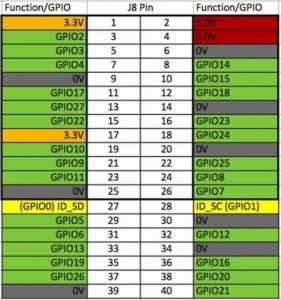
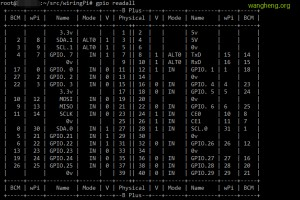

wiring Pi 是专门为树莓派打造的类似于arduino下的wiring驱动库，安装好这个库后可以直接调用函数配置和控制GPIO功能。
我买的树莓派B+版本，如图：

可见共有个40pin的扩展 gpio，电源IO包含3.3v 5v ，接口定义如下图所示：

一、首先我们先安装开发环境
1
2
3
4
5
6
7
8
9
10
11
12
13
14
|
sudo apt-get install libi2c-dev
sudo apt-get install git-core
git clone git://git.drogon.net/wiringPi
cd wiringPi
git pull origin
cd wiringPi/
./build
gpio -v
gpio readall
|
执行完 gpio readall 会显示当前板子的接口定义！如下图：

比如 12 | 1 | IN | GPIO. 1 | 1 | 18
表示你用wiring库中的函数操作gpio1，其实是操作BCM格式的gpio18端口，物理的12针脚。
二、模块准备
DHT11是比较常用的一块传感器，物美价廉，同时可以获取到环境的温度和湿度。由于比较简单，我就没有买那种焊接好的模块，只是一个DHT11的传感器，回来自己简单焊接封装了一下。
DHT11的针脚说明如下：

从左至右分别是1、2、3、4针脚，使用的时候我们需要加装一个上拉电阻，简单地说就是在第一第二针脚之间接一个10K左右的电阻。
接线比较简单，就不过多介绍了。
三、获取传感器数据
由于树莓派比起Arduino还是强大的太多，所以无论是用c还是python都可以很方便的按照模块的时序图编写驱动。网上各种各样的版本也是太多，思路就是严格按照手册规范来，数据校验失败的作为垃圾数据扔掉。参照比较正统的做法，自己整理了一份代码，需要的朋友也可以顺手拿走。
代码很短，参考如下：
1
2
3
4
5
6
7
8
9
10
11
12
13
14
15
16
17
18
19
20
21
22
23
24
25
26
27
28
29
30
31
32
33
34
35
36
37
38
39
40
41
42
43
44
45
46
47
48
49
50
51
52
53
54
55
56
57
58
59
60
61
62
63
64
65
66
67
68
69
70
71
72
73
74
75
76
77
78
79
80
81
82
83
84
85
86
87
88
89
90
91
92
93
94
95
96
97
98
99
100
101
102
103
104
105
106
107
108
109
110
111
112
| #include <wiringPi.h>
#include <stdio.h>
#include <stdlib.h>
typedef unsigned char uint8;
typedef unsigned int uint16;
typedef unsigned long uint32;
#define HIGH_TIME 32
int gpioPin =4;
uint32 databuf;
uint8 readSensorData(void)
{
uint8 crc;
uint8 i;
pinMode(gpioPin,OUTPUT);
digitalWrite(gpioPin, 0);
delay(25);
digitalWrite(gpioPin, 1);
pinMode(gpioPin, INPUT);
pullUpDnControl(gpioPin,PUD_UP);
delayMicroseconds(27);
if(digitalRead(gpioPin)==0)
{
while(!digitalRead(gpioPin));
for(i=0;i<32;i++)
{
while(digitalRead(gpioPin));
while(!digitalRead(gpioPin));
delayMicroseconds(HIGH_TIME);
databuf*=2;
if(digitalRead(gpioPin)==1)
{
databuf++;
}
}
for(i=0;i<8;i++)
{
while(digitalRead(gpioPin));
while(!digitalRead(gpioPin));
delayMicroseconds(HIGH_TIME);
crc*=2;
if(digitalRead(gpioPin)==1)
{
crc++;
}
}
return 1;
}
else
{
return 0;
}
}
int main (int argc, char **argv)
{
if (argc != 2) {
printf("usage: %s GPIOpin#\n", argv[0]);
printf("example: %s 1 - Read from wiringPi GPIO #1\n", argv[0]);
return 2;
}
gpioPin = atoi(argv[1]);
if (gpioPin <= 0) {
printf("Please select a valid GPIO pin #\n");
return 3;
}
printf("Use GPIO%d to read data!\n",gpioPin);
if (-1 == wiringPiSetup()) {
printf("Setup wiringPi failed!");
return 1;
}
pinMode(gpioPin, OUTPUT);
digitalWrite(gpioPin, 1);
while(1) {
pinMode(gpioPin,OUTPUT);
digitalWrite(gpioPin, 1);
delay(3000);
if(readSensorData())
{
printf("Success! Sensor data read ok!\n");
printf("Hum=%d.%d\%\n",(databuf>>24)&0xff,(databuf>>16)&0xff);
printf("Temp=%d.%dC\n",(databuf>>8)&0xff,databuf&0xff);
databuf=0;
break;
}
else
{
databuf=0;
}
}
return 0;
}
|
完整的代码放在了我的github共享：https://github.com/wujiwh/DHT11_yeelink/
使用方式：
1、首先编译，切换到工作目录
make
2、执行 ./dht11 GPIO端口号
看看是不是有数据显示了！
四、上传传感器数据到yeelink
数据上传就更简单了，这已经基本跟硬件没多少关系了，众多的物联网平台里面yeelink算是做的不错的，各方面的文档也很容易搜到。官网是：http://www.yeelink.net/ 你需要注册一个账号来获取你的apikey，有了这个apikey我们才能发布我们的数据到物联网平台。网上有很详细的介绍，我就不冗述了。
1、linux下面发送POST请求，最简单的莫过于直接使用crul了！我写了一个简陋的脚本来发送温度数据到yeelink平台，湿度类似。
代码如下：
1
2
3
4
5
6
7
8
9
10
11
12
13
14
15
16
17
18
19
| #!/bin/sh
yeelink_ApiKey='XXX'
yeelink_URL='http://api.yeelink.net/v1.1/device/XXX/sensor/XXX/datapoints'
temp=$(./dht11 1 |awk '/Hum/' |awk -F '=' '{print $2}'|sed 's/%//')
echo $temp
curl_cmd="curl --request POST --data '{\"value\":$temp}' --header U-ApiKey:$yeelink_ApiKey --verbose $yeelink_URL"
echo $curl_cmd|sh
|
PS：awk用的还不是很熟，写的比较啰嗦，有更专业的朋友看到，欢迎拍砖。
2、使用python似乎也是一个非常不错的选择，python漂亮的语法，写起来也很简单。
代码如下：
1
2
3
4
5
6
7
8
9
10
11
12
13
14
15
16
17
18
19
20
21
22
23
24
25
26
27
28
29
30
31
32
33
34
35
36
37
38
39
40
41
42
43
44
45
46
47
48
49
50
51
52
53
54
55
56
57
58
59
60
61
62
63
64
65
66
67
68
69
70
71
|
'''
#=============================================================================
# FileName: dht11_post.py
# Desc:
# Author: wangheng
# Email: wujiwh@gmail.com
# HomePage: http://wangheng.org
# Version: 0.0.1
# LastChange: 2015-01-27 22:40:37
# History:
#=============================================================================
'''
import subprocess
import re
import json
import sys
import time
import datetime
import requests
API_Headers = {'U-ApiKey': 'XXX', 'content-type': 'application/json'}
API_URL="http://api.yeelink.net/v1.1/device/%s/sensor/%s/datapoints"
device_id="XXX"
hum_sensor_id="XXX"
temp_sensor_id="XXX"
hum_url = API_URL % (device_id, hum_sensor_id)
temp_url = API_URL % (device_id, temp_sensor_id)
while(True):
output = subprocess.check_output(["./dht11", "1"]);
matches = re.search("Temp=([0-9.]+)C", output)
if (not matches):
time.sleep(3)
continue
temp = float(matches.group(1))
matches = re.search("Hum=([0-9.]+)\%", output)
if (not matches):
time.sleep(3)
continue
humidity = float(matches.group(1))
print "Temperature: %.1f C" % temp
print "Humidity: %.1f %%" % humidity
try:
post_data = {'value': temp}
r = requests.post(temp_url, headers=API_Headers, data=json.dumps(post_data))
post_data = {'value': humidity}
r = requests.post(hum_url, headers=API_Headers, data=json.dumps(post_data))
print "Post to yeelink success!"
except:
print "Unable to post data. Check your connection?"
sys.exit()
time.sleep(15)
|
{kind=link}
 微信
微信 支付宝
支付宝